<?xml version="1.0" encoding="utf-8"?>
<!DOCTYPE html PUBLIC "-//W3C//DTD XHTML 1.0 Strict//EN"
 "http://www.w3.org/TR/xhtml1/DTD/xhtml1-strict.dtd">
<html xmlns="http://www.w3.org/1999/xhtml">
<head>
  <meta http-equiv="Content-Type" content="text/html; charset=utf-8" />
  <meta http-equiv="Content-Style-Type" content="text/css" />
  <meta name="generator" content="pandoc" />
  <meta name="author" content="Andy Lyons" />
  <meta name="copyright" content="Berkeley R Language Beginner Study Group, Aug. 18, 2015"/> 
  <title>Interactive Data Visualization with R</title>
  <style type="text/css">code{white-space: pre;}</style>
  <style type="text/css">
table.sourceCode, tr.sourceCode, td.lineNumbers, td.sourceCode {
  margin: 0; padding: 0; vertical-align: baseline; border: none; }
table.sourceCode { width: 100%; line-height: 100%; }
td.lineNumbers { text-align: right; padding-right: 4px; padding-left: 4px; color: #aaaaaa; border-right: 1px solid #aaaaaa; }
td.sourceCode { padding-left: 5px; }
code > span.kw { color: #007020; font-weight: bold; }
code > span.dt { color: #902000; }
code > span.dv { color: #40a070; }
code > span.bn { color: #40a070; }
code > span.fl { color: #40a070; }
code > span.ch { color: #4070a0; }
code > span.st { color: #4070a0; }
code > span.co { color: #60a0b0; font-style: italic; }
code > span.ot { color: #007020; }
code > span.al { color: #ff0000; font-weight: bold; }
code > span.fu { color: #06287e; }
code > span.er { color: #ff0000; font-weight: bold; }
  </style>
  <link rel="stylesheet" type="text/css" media="screen, projection, print"
    href="idv_berkeley-meetup_files\Slidy2/styles/slidy.css" />
  <style>
  div.colleft {
      float:left;
      width:49%; 
  }
  div.colright {
      float:right;
      width:49%; 
  }
  div.colclear { 
     clear: both;
  }
  ul li {
     list-style-position: outside;
     margin: 0.1em 0em 0.6em 1em;
  }
  span.pkgname {
     font-size:100%;
     color: #900;
     white-space: pre;
     background-color: whiteSmoke;
     border: 1px dotted #785;
     padding: 0.2em;
  }
  pre.scrolling-code {
      margin:1em 2em;
      font-size:75%;
      font-weight: normal;
      overflow:scroll;
      border: 1px solid black;
      background-color: WhiteSmoke;
      color: black;
  }
  code {
      font-size: 80%;
      font-weight: normal;
  }
  pre.markdown {
      margin:1em 2em;
      font-size:75%;
      font-weight: normal;
      background-color: WhiteSmoke;
      border: none;
      color: black;
  }
  /* returns the shading to code chunks where verbatim=TRUE */
  pre:not([r]) {background-color:#F5F5F5;}
  
  </style>
  <script src="idv_berkeley-meetup_files/htmlwidgets-0.5/htmlwidgets.js"></script>
  <script src="idv_berkeley-meetup_files/jquery-1.11.1/jquery.min.js"></script>
  <script src="idv_berkeley-meetup_files/datatables-binding-0.1/datatables.js"></script>
  <script src="idv_berkeley-meetup_files/datatables-1.10.7/jquery.dataTables.min.js"></script>
  <link href="idv_berkeley-meetup_files/datatables-default-1.10.7/dataTables.extra.css" rel="stylesheet" />
  <link href="idv_berkeley-meetup_files/datatables-default-1.10.7/jquery.dataTables.min.css" rel="stylesheet" />
  <link href="idv_berkeley-meetup_files/dygraphs-1.0.1/dygraph.css" rel="stylesheet" />
  <script src="idv_berkeley-meetup_files/dygraphs-1.0.1/dygraph-combined.js"></script>
  <script src="idv_berkeley-meetup_files/moment-2.8.4/moment.js"></script>
  <script src="idv_berkeley-meetup_files/moment-timezone-0.2.5/moment-timezone-with-data.js"></script>
  <script src="idv_berkeley-meetup_files/dygraphs-binding-0.4.5/dygraphs.js"></script>
  <script src="idv_berkeley-meetup_files\Slidy2/scripts/slidy.js"
    charset="utf-8" type="text/javascript"></script>
</head>
<body>
<div class="slide titlepage">
  <h1 class="title">Interactive Data Visualization with R</h1>
  <p class="author">
Andy Lyons
  </p>
  <p class="date"><br>The Berkeley R Language Beginner Study Group<br>August 18, 2015</p>
</div>
<div id="outline" class="slide section level1">
<h1>Outline</h1>
<script type="text/javascript">w3c_slidy.mouse_click_enabled = false;</script>
<ul>
<li>Interactivity</li>
<li>Anatomy of R Markdown</li>
<li>HTML Widgets</li>
<li>Shiny</li>
<li>Publishing</li>
</ul>
</div>
<div class="slide section level1">

<div style="text-align:center; margin: 25px 0px;">

</div>
<div style="text-align:center; margin: 25px 0px;">
<a href="http://github.com/ajlyons/" class="uri">http://github.com/ajlyons/</a>
</div>
</div>
<div id="interactivity-sampler" class="slide section level1">
<h1>Interactivity Sampler</h1>
<ul>
<li><a href="http://www.nytimes.com/interactive/2013/05/25/sunday-review/corporate-taxes.html" class="uri">http://www.nytimes.com/interactive/2013/05/25/sunday-review/corporate-taxes.html</a></li>
<li><a href="http://www.gapminder.org/world" class="uri">http://www.gapminder.org/world</a></li>
<li><a href="https://plot.ly/r/" class="uri">https://plot.ly/r/</a></li>
<li><a href="https://gallery.shinyapps.io/lake_erie_fisheries_stock_assessment_app/" class="uri">https://gallery.shinyapps.io/lake_erie_fisheries_stock_assessment_app/</a></li>
<li><a href="http://shiny.snap.uaf.edu/ak_station_cru_eda/" class="uri">http://shiny.snap.uaf.edu/ak_station_cru_eda/</a></li>
</ul>
</div>
<div id="is-all-interactivity-equal" class="slide section level1">
<h1>Is All Interactivity Equal?</h1>
</div>
<div id="spectrum-of-interactivity" class="slide section level1">
<h1>Spectrum of Interactivity</h1>
<div class="colleft">
<ul>
<li>hover / tooltip text</li>
<li>animations</li>
<li>manipulate symbology</li>
<li>custom sorting and filtering</li>
<li>set axes ranges</li>
<li>pan and zoom</li>
<li>download data</li>
<li>change chart type</li>
<li>choose which series appear on which axis</li>
<li>input data and parameter values</li>
<li>choose the analysis</li>
</ul>
</div>
<div class="colright" style="text-align:center;">
<span style="line-height: 200%;"> Present results<br />↓<br />↓<br />↓<br />↓<br />↓<br />↓<br />↓<br />↓<br />↓<br />Explore data </span>
</div>
<div class="colclear">

</div>
</div>
<div id="dynamic-vs.-interactive" class="slide section level1">
<h1>Dynamic vs. Interactive</h1>
<div class="colleft">
<h2 style="text-decoration:underline">
Dynamic
</h2>
<ul>
<li>documents generated by R (usually from a R markdown document)</li>
<li>can combine text, headings, R code and outputs (plots, tables)</li>
<li>formats: PDF, HTML, Word</li>
<li>gold standard for reproducible research</li>
<li>may or may not be interactive</li>
</ul>
</div>
<div class="colright">
<h2 style="text-decoration:underline">
Interactive
</h2>
<ul>
<li>user can manipulate display / summary / analysis</li>
<li>formats: HTML</li>
<li>may or may not be dynamic</li>
</ul>
</div>
<div class="colclear">

</div>
</div>
<div id="r-markdown-extending-a-generic-document-language" class="slide section level1">
<h1>R Markdown: Extending a Generic Document Language</h1>
<ul>
<li>Markdown is a simple formatting syntax for authoring dynamic documents</li>
<li>Simpler to write than LaTeK or HTML</li>
<li>Tools to convert Markdown files to HTML, PDF, and MS Word document.
<ul>
<li>Usually can evaluate expressions from one or more languages (JS, Python)</li>
</ul></li>
<li>R Markdown is a flavor of Markdown that allows you to embed and run R code, include plots,</li>
</ul>
<pre class="scrolling-code" style="height:40%">
---
title: "Analysis of the Speed and Stopping Distances of Cars"
author: "Andy Lyons"
date: "Monday, August 1, 2015"
output: html_document
---

## Trailing Distance Safety: Why the Two-Second Rule May Kill You

### Elements of Stopping Distance

One aspect of safe driving involves the ability to stop a car readily. This
ability depends upon the driver's alertness and readiness to stop, the
conditions of the road, the speed of the car, and the braking characteristics of
the car. The actual distance that it takes to stop the car can be thought of as
consisting of two parts: the reaction distance and braking distance. 

When a driver sees an event in his/her field of view that might warrant braking
(for example, a dog running into the street), a collection of actions must be
taken before the braking actually begins. First the driver must identify the
event and decide if braking is necessary. Then the driver must lift his/her foot
off the gas pedal and move it to the brake pedal. And finally, the driver must
press the brake down its full distance in order to obtain maximum braking
acceleration. The time to do all this is known as the reaction time. The
distance traveled during this time is known as the __reaction distance__. Once
the brakes are applied, the car begins to slow to a stop. The distance traveled
by the car during this time is known as the __braking distance__. The braking
distance is dependent upon the original speed of the car, the road conditions,
and characteristics of the car such as its profile area, mass and tire
conditions. 

&#96;``{r}
library(ggplot2)
stop_dist <- read.csv("stopping_dist_cars.csv", stringsAsFactors=FALSE, strip.white=TRUE)
stop_dist <- transform(stop_dist, total_dist=breaking_dist + reaction_dist) 
ggplot(data=stop_dist, aes(x=speed, y=total_dist, group=surface, colour=surface)) + 
geom_line() + geom_point() + ggtitle("Total Stopping Distance by Speed") + 
xlab("Speed (km/h)") + ylab("Total stopping distance (m)")
&#96;``

### Vehicle Performance and Stopping Distance

The data give the speed of cars and the distances taken to stop. Note that 
the data were recorded in the 1920s.

&#96;``{r}
plot(cars)
&#96;``

Source: Ezekiel, M. (1930) Methods of Correlation Analysis. Wiley.

</pre>
</div>
<div id="r-markdown-flavors" class="slide section level1 incremetal">
<h1>R Markdown: Flavors</h1>
<ul>
<li>All varieties of R Markdown support the majority of R Markdown syntax
<ul>
<li>formatting</li>
<li>styles</li>
<li>code chunks</li>
</ul></li>
<li><p>Different 'flavors' of R Markdown can provide additional functionality and customization</p></li>
<li>Each flavor generally designed for a specific type of output
<ul>
<li>documents</li>
<li>presentation (RPresentations, ioslides, slidy, slidify, beamer)</li>
<li>app (Shiny)</li>
</ul></li>
</ul>
</div>
<div id="r-markdown-a-means-to-an-end" class="slide section level1">
<h1>R Markdown: A Means to an End</h1>
<div style="margin-top:80px; text-align:center;">
*.Rmd → <span class="pkgname">knitr</span> → *.md → <span class="pkgname">pandoc</span> → <span style="display:inline-block; margin-left:0.6em; vertical-align:middle; text-align:left;">*.pdf (requires TeK also)<br><br>*.doc<br><br>*.html (+ *.css, *.js *.ttf)</span>
</div>
</div>
<div id="r-markdown-support-in-rstudio" class="slide section level1">
<h1>R Markdown: Support in RStudio</h1>
<p>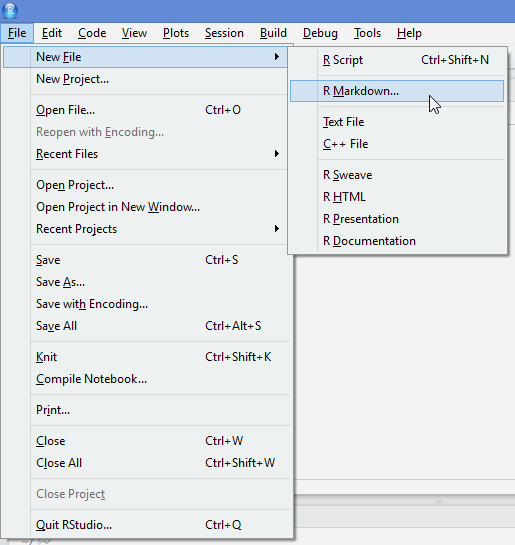</p>
<p>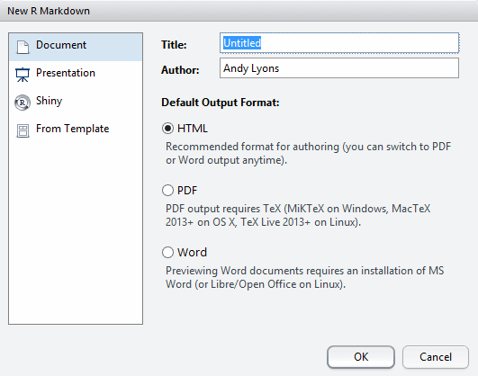</p>
<p>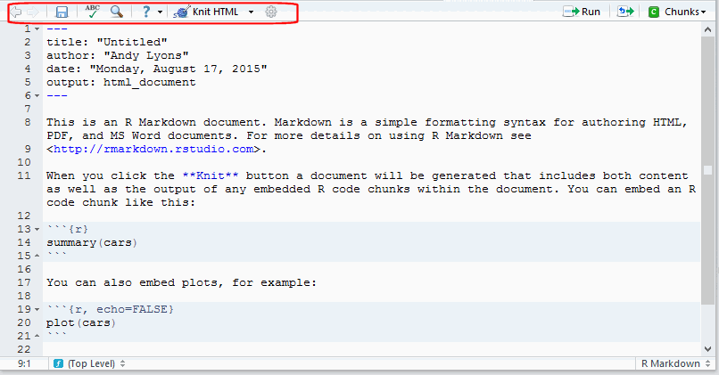</p>
<p>For more details see <a href="http://rmarkdown.rstudio.com" class="uri">http://rmarkdown.rstudio.com</a>.</p>
</div>
<div id="r-markdown-anatomy-of-a-document" class="slide section level1">
<h1>R Markdown: Anatomy of a Document</h1>
<div class="colleft" style="width:20%;">
<p>YAML section</p>
<p>Paragraph text</p>
<p>Code chunks</p>
</div>
<div class="colright" style="width:75%; height:20%;">
<pre class="scrolling-code" style="height:450px;">
---
title: "Untitled"
author: "Andy Lyons"
date: "Monday, August 17, 2015"
output: html_document
---

This is an R Markdown document. Markdown is a simple formatting syntax for
authoring HTML, PDF, and MS Word documents. For more details on using R Markdown
see <http://rmarkdown.rstudio.com>

When you click the **Knit** button a document will be generated that includes
both content as well as the output of any embedded R code chunks within the
document. You can embed an R code chunk like this:

&#96;``{r}
summary(cars)
&#96;``

You can also embed plots, for example:

&#96;``{r, echo=FALSE}
plot(cars)
&#96;``

Note that the `echo = FALSE` parameter was added to the code chunk to prevent
printing of the R code that generated the plot.
</pre>
</div>
<div class="colclear">

</div>
</div>
<div id="r-markdown-yaml" class="slide section level1 incremental">
<h1>R Markdown: YAML</h1>
<p>Standard stuff</p>
<pre class="markdown">
---
title: "Interactive Data Visualization"
author: "Andy Lyons"
date: "Friday, August 18, 2015"
output: slidy_presentation
---
</pre>
<p>Other Common Options</p>
<pre class="markdown">
output:
  html_document:
    fig_height: 4
    fig_width: 4
    self_contained: no
    smart: no
    theme: journal
</pre>
<p>Easy Way to Change YAML Options</p>
<p>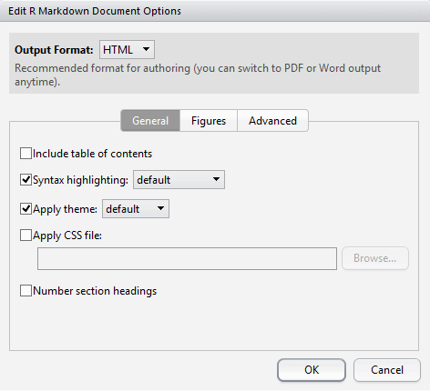</p>
<p>Flavor Specific Options</p>
<pre class="markdown">
---
output:
  slidy_presentation:
    incremental: true
    highlight: pygments
    font_adjustment: -1
    duration: 45
    mathjax: local
    footer: "Berkeley R Language Beginner Study Group, Aug. 18, 2015"
    includes:
      in_header: idv_header.html    
---
</pre>
</div>
<div id="r-markdown-paragraph-text" class="slide section level1">
<h1>R Markdown: Paragraph Text</h1>
<p>Formatting paragraph text is easy. See the 'Markdown Quick Reference' to get started. Start a new paragraphs with a blank line.</p>
<h3 id="emphasis">Emphasis</h3>
<pre><code>*italic*   **bold**
_italic_   __bold__</code></pre>
<h3 id="headers">Headers</h3>
<pre><code># Header 1
## Header 2
### Header 3</code></pre>
<h3 id="lists">Lists</h3>
<p>Unordered List</p>
<pre><code>* Item 1
* Item 2
    + Item 2a
    + Item 2b</code></pre>
<p>Ordered List</p>
<pre><code>1. Item 1
2. Item 2
3. Item 3
    + Item 3a
    + Item 3b</code></pre>
<h3 id="manual-line-breaks">Manual Line Breaks</h3>
<p>End a line with two or more spaces:</p>
<pre><code>Roses are red,   
Violets are blue.</code></pre>
<h3 id="links">Links</h3>
<p>Use a plain http address or add a link to a phrase:</p>
<pre><code>http://example.com

[linked phrase](http://example.com)</code></pre>
<h3 id="images">Images</h3>
<p>Images on the web or local files in the same directory:</p>
<pre><code>
</code></pre>
<h3 id="blockquotes">Blockquotes</h3>
<p>A friend once said:</p>
<pre><code>&gt; It&#39;s always better to give 
&gt; than to receive.</code></pre>
<p>For more info, see <a href="http://rmarkdown.rstudio.com/" class="uri">http://rmarkdown.rstudio.com/</a></p>
</div>
<div id="r-markdown-code-chunks" class="slide section level1">
<h1>R Markdown: Code Chunks</h1>
<div class="colleft" style="width:55%;">
<pre class="markdown">
&#96;``{r}
x <- rnorm(30) * 1000
plot(x, type="b", pch=20, main="China
     Stock Market")
&#96;``
</pre>
</div>
<div class="colright" style="width:45%;">
<pre class="sourceCode r"><code class="sourceCode r">x &lt;-<span class="st"> </span><span class="kw">rnorm</span>(<span class="dv">30</span>) *<span class="st"> </span><span class="dv">1000</span>
<span class="kw">plot</span>(x, <span class="dt">type=</span><span class="st">&quot;b&quot;</span>, <span class="dt">pch=</span><span class="dv">20</span>, <span class="dt">main=</span><span class="st">&quot;China </span>
<span class="st">     Stock Market&quot;</span>)</code></pre>
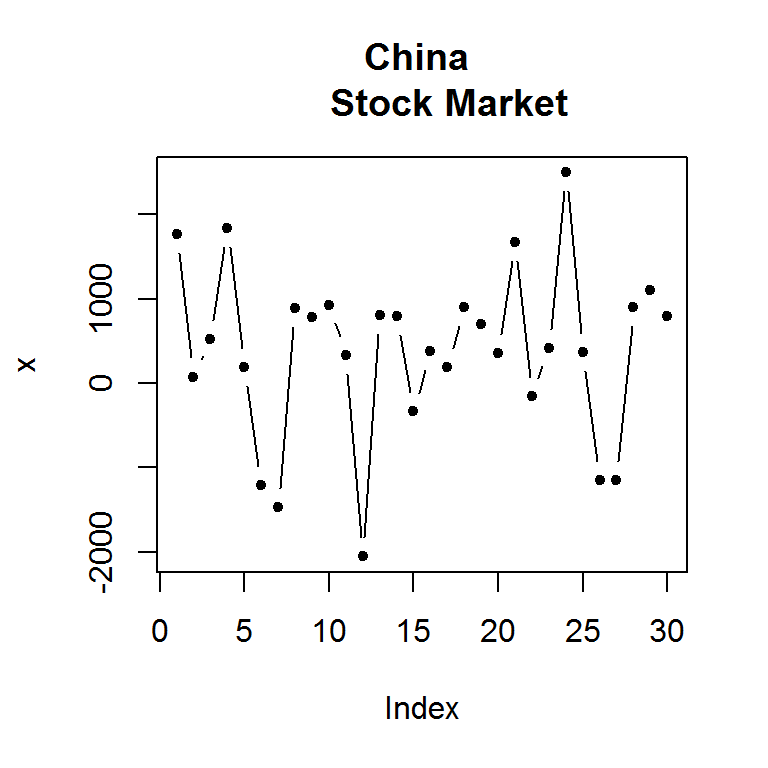
</div>
<div class="colclear">

</div>
<h3 id="code-chunk-options">Code Chunk Options</h3>
<div class="colleft" style="width:55%;">
<pre class="markdown">
&#96;``{r, <strong>echo=FALSE</strong>}
x <- rnorm(30) * 1000
plot(x, type="b", pch=20, main="China
     Stock Market")
&#96;``
</pre>
<p>Many other code chunk options to do things like:</p>
<ul>
<li>hide messages, warnings, output</li>
<li>change figure dimensions, alignment</li>
<li>modify appearance of console output</li>
<li>etc.</li>
</ul>
</div>
<div class="colright" style="width:45%;">
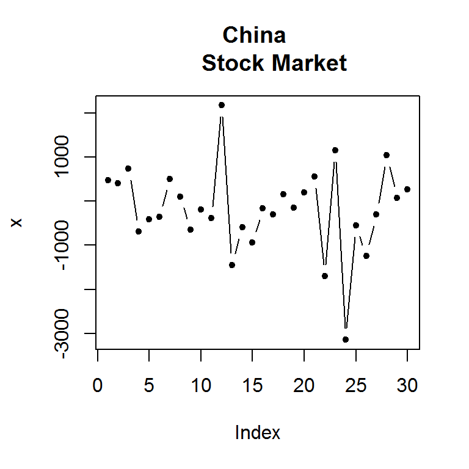
</div>
<div class="colclear">

</div>
<h3 id="code-chunk-environment">Code Chunk Environment</h3>
<ul>
<li>All code in a R Markdown document is executed in a separate environment</li>
<li>This means all libraries and data objects have to be loaded in the R Markdown document (i.e., in a code chunk)
<ul>
<li>The packages and objects loaded in your base environment won't do you any good :-(</li>
</ul></li>
<li>Method behind the madness: reproducible research</li>
<li>Example:</li>
</ul>
<pre class="markdown">
&#96;``{r}
ggplot(data=brake_dist, aes(x=speed, y=total_dist, group=surface, colour=surface)) +
geom_line() + geom_point()

## This will NOT work. Even if 'brake_dist' exists in our base environment,
## we haven't loaded it in this R Markdown document.
&#96;``
</pre>
<ul>
<li>This one will work, because we load ggplot2 and the data before we use them:</li>
</ul>
<pre class="markdown">
&#96;``{r, fig.height=4, fig.width=7, echo=FALSE}
library(ggplot2)
brake_dist <- read.csv("stopping_dist_cars.csv", stringsAsFactors=FALSE, strip.white=TRUE)
ggplot(data=brake_dist, aes(x=speed, y=total_dist, group=surface, colour=surface)) +
geom_line() + geom_point()
&#96;``
</pre>
<p>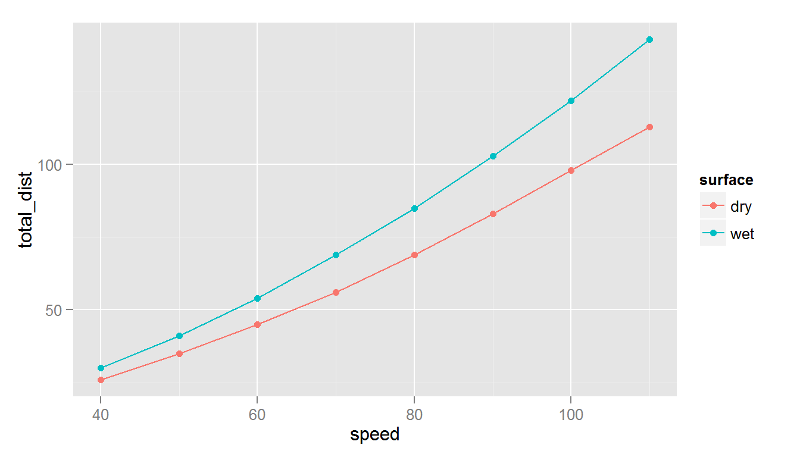</p>
<h3 id="r-markdown-resources">R Markdown Resources</h3>
<ul>
<li>Cheatsheet: <a href="https://www.rstudio.com/wp-content/uploads/2015/02/rmarkdown-cheatsheet.pdf" class="uri">https://www.rstudio.com/wp-content/uploads/2015/02/rmarkdown-cheatsheet.pdf</a></li>
<li>Reference Guide: <a href="https://www.rstudio.com/wp-content/uploads/2015/03/rmarkdown-reference.pdf" class="uri">https://www.rstudio.com/wp-content/uploads/2015/03/rmarkdown-reference.pdf</a></li>
</ul>
</div>
<div id="interactivity" class="slide section level1">
<h1>Interactivity</h1>
<div class="colleft">
<h3>Client Side Interactivity</h3>
<ul>
<li>animation</li>
<li>HTML widgets</li>
</ul>
</div>
<div class="colright">
<h3>Server-side Interactivity</h3>
<ul>
<li>Shiny Apps</li>
<li>gooogleVis (?)</li>
</ul>
</div>
<div class="colclear">

</div>
</div>
<div id="animation" class="slide section level1">
<h1>Animation</h1>
<ul>
<li>You can turn a series of plots produced by a code chunk into an animation</li>
<li>Add the <strong>fig.show='animate'</strong> code chunk option</li>
<li>This requires the free utility <em>ffmpeg.exe</em> be installed (also a SWF option)</li>
<li>Animation comes as embedded video (only visible in a browser)</li>
<li>Recommend: self_contained: no</li>
</ul>
<h3 id="example">Example</h3>
<pre><code>``&#39;{r animate_test, fig.show=&#39;animate&#39;, fig.width=4, fig.height=4, interval=0.05, aniopts=&quot;controls,loop&quot;}
for (i in 1:50) {
    plot(x=i/10, y=i/10, xlim=c(0,6), ylim=c(0,6), pch=20, col=palette()[2], cex=5)
}
&#39;``</code></pre>
<video width="384"  controls loop>
<source src="idv_berkeley-meetup_files/figure-slidy/animate_test-.webm" />
<p>
video of chunk animate_test
</p>
</video>
</div>
<div id="html-widgets" class="slide section level1">
<h1>HTML Widgets</h1>
<ul>
<li>Widgets are combos of HTML5, JavaScript, CSS, and D3 to provide interactivity</li>
<li>client-side processing - everything resides in the browser!</li>
<li>R packages provide familiar R functions to generate the HTML code, libraries:
<ul>
<li>these packages use functions and classes from the <span class="pkgname">htmlwidgets</span></li>
<li>some packages are on github, require <span class="pkgname">devtools</span> to install</li>
</ul></li>
<li>More info and widget gallery at <a href="http://www.htmlwidgets.org/" class="uri">http://www.htmlwidgets.org/</a></li>
</ul>
</div>
<div id="html-widgets-dt" class="slide section level1">
<h1>HTML Widgets: DT</h1>
<p><span class="pkgname">DT</span> package creates interactive HTML tables that support filtering, pagination, and sorting.</p>
<pre class="sourceCode r"><code class="sourceCode r"><span class="kw">library</span>(DT)
<span class="kw">datatable</span>(iris, <span class="dt">options =</span> <span class="kw">list</span>(<span class="dt">pageLength =</span> <span class="dv">10</span>))</code></pre>
<p><div id="htmlwidget-9310" style="width:100%;height:auto;" class="datatables"></div>
<script type="application/json" data-for="htmlwidget-9310">{"x":{"data":[["1","2","3","4","5","6","7","8","9","10","11","12","13","14","15","16","17","18","19","20","21","22","23","24","25","26","27","28","29","30","31","32","33","34","35","36","37","38","39","40","41","42","43","44","45","46","47","48","49","50","51","52","53","54","55","56","57","58","59","60","61","62","63","64","65","66","67","68","69","70","71","72","73","74","75","76","77","78","79","80","81","82","83","84","85","86","87","88","89","90","91","92","93","94","95","96","97","98","99","100","101","102","103","104","105","106","107","108","109","110","111","112","113","114","115","116","117","118","119","120","121","122","123","124","125","126","127","128","129","130","131","132","133","134","135","136","137","138","139","140","141","142","143","144","145","146","147","148","149","150"],[5.1,4.9,4.7,4.6,5,5.4,4.6,5,4.4,4.9,5.4,4.8,4.8,4.3,5.8,5.7,5.4,5.1,5.7,5.1,5.4,5.1,4.6,5.1,4.8,5,5,5.2,5.2,4.7,4.8,5.4,5.2,5.5,4.9,5,5.5,4.9,4.4,5.1,5,4.5,4.4,5,5.1,4.8,5.1,4.6,5.3,5,7,6.4,6.9,5.5,6.5,5.7,6.3,4.9,6.6,5.2,5,5.9,6,6.1,5.6,6.7,5.6,5.8,6.2,5.6,5.9,6.1,6.3,6.1,6.4,6.6,6.8,6.7,6,5.7,5.5,5.5,5.8,6,5.4,6,6.7,6.3,5.6,5.5,5.5,6.1,5.8,5,5.6,5.7,5.7,6.2,5.1,5.7,6.3,5.8,7.1,6.3,6.5,7.6,4.9,7.3,6.7,7.2,6.5,6.4,6.8,5.7,5.8,6.4,6.5,7.7,7.7,6,6.9,5.6,7.7,6.3,6.7,7.2,6.2,6.1,6.4,7.2,7.4,7.9,6.4,6.3,6.1,7.7,6.3,6.4,6,6.9,6.7,6.9,5.8,6.8,6.7,6.7,6.3,6.5,6.2,5.9],[3.5,3,3.2,3.1,3.6,3.9,3.4,3.4,2.9,3.1,3.7,3.4,3,3,4,4.4,3.9,3.5,3.8,3.8,3.4,3.7,3.6,3.3,3.4,3,3.4,3.5,3.4,3.2,3.1,3.4,4.1,4.2,3.1,3.2,3.5,3.6,3,3.4,3.5,2.3,3.2,3.5,3.8,3,3.8,3.2,3.7,3.3,3.2,3.2,3.1,2.3,2.8,2.8,3.3,2.4,2.9,2.7,2,3,2.2,2.9,2.9,3.1,3,2.7,2.2,2.5,3.2,2.8,2.5,2.8,2.9,3,2.8,3,2.9,2.6,2.4,2.4,2.7,2.7,3,3.4,3.1,2.3,3,2.5,2.6,3,2.6,2.3,2.7,3,2.9,2.9,2.5,2.8,3.3,2.7,3,2.9,3,3,2.5,2.9,2.5,3.6,3.2,2.7,3,2.5,2.8,3.2,3,3.8,2.6,2.2,3.2,2.8,2.8,2.7,3.3,3.2,2.8,3,2.8,3,2.8,3.8,2.8,2.8,2.6,3,3.4,3.1,3,3.1,3.1,3.1,2.7,3.2,3.3,3,2.5,3,3.4,3],[1.4,1.4,1.3,1.5,1.4,1.7,1.4,1.5,1.4,1.5,1.5,1.6,1.4,1.1,1.2,1.5,1.3,1.4,1.7,1.5,1.7,1.5,1,1.7,1.9,1.6,1.6,1.5,1.4,1.6,1.6,1.5,1.5,1.4,1.5,1.2,1.3,1.4,1.3,1.5,1.3,1.3,1.3,1.6,1.9,1.4,1.6,1.4,1.5,1.4,4.7,4.5,4.9,4,4.6,4.5,4.7,3.3,4.6,3.9,3.5,4.2,4,4.7,3.6,4.4,4.5,4.1,4.5,3.9,4.8,4,4.9,4.7,4.3,4.4,4.8,5,4.5,3.5,3.8,3.7,3.9,5.1,4.5,4.5,4.7,4.4,4.1,4,4.4,4.6,4,3.3,4.2,4.2,4.2,4.3,3,4.1,6,5.1,5.9,5.6,5.8,6.6,4.5,6.3,5.8,6.1,5.1,5.3,5.5,5,5.1,5.3,5.5,6.7,6.9,5,5.7,4.9,6.7,4.9,5.7,6,4.8,4.9,5.6,5.8,6.1,6.4,5.6,5.1,5.6,6.1,5.6,5.5,4.8,5.4,5.6,5.1,5.1,5.9,5.7,5.2,5,5.2,5.4,5.1],[0.2,0.2,0.2,0.2,0.2,0.4,0.3,0.2,0.2,0.1,0.2,0.2,0.1,0.1,0.2,0.4,0.4,0.3,0.3,0.3,0.2,0.4,0.2,0.5,0.2,0.2,0.4,0.2,0.2,0.2,0.2,0.4,0.1,0.2,0.2,0.2,0.2,0.1,0.2,0.2,0.3,0.3,0.2,0.6,0.4,0.3,0.2,0.2,0.2,0.2,1.4,1.5,1.5,1.3,1.5,1.3,1.6,1,1.3,1.4,1,1.5,1,1.4,1.3,1.4,1.5,1,1.5,1.1,1.8,1.3,1.5,1.2,1.3,1.4,1.4,1.7,1.5,1,1.1,1,1.2,1.6,1.5,1.6,1.5,1.3,1.3,1.3,1.2,1.4,1.2,1,1.3,1.2,1.3,1.3,1.1,1.3,2.5,1.9,2.1,1.8,2.2,2.1,1.7,1.8,1.8,2.5,2,1.9,2.1,2,2.4,2.3,1.8,2.2,2.3,1.5,2.3,2,2,1.8,2.1,1.8,1.8,1.8,2.1,1.6,1.9,2,2.2,1.5,1.4,2.3,2.4,1.8,1.8,2.1,2.4,2.3,1.9,2.3,2.5,2.3,1.9,2,2.3,1.8],["setosa","setosa","setosa","setosa","setosa","setosa","setosa","setosa","setosa","setosa","setosa","setosa","setosa","setosa","setosa","setosa","setosa","setosa","setosa","setosa","setosa","setosa","setosa","setosa","setosa","setosa","setosa","setosa","setosa","setosa","setosa","setosa","setosa","setosa","setosa","setosa","setosa","setosa","setosa","setosa","setosa","setosa","setosa","setosa","setosa","setosa","setosa","setosa","setosa","setosa","versicolor","versicolor","versicolor","versicolor","versicolor","versicolor","versicolor","versicolor","versicolor","versicolor","versicolor","versicolor","versicolor","versicolor","versicolor","versicolor","versicolor","versicolor","versicolor","versicolor","versicolor","versicolor","versicolor","versicolor","versicolor","versicolor","versicolor","versicolor","versicolor","versicolor","versicolor","versicolor","versicolor","versicolor","versicolor","versicolor","versicolor","versicolor","versicolor","versicolor","versicolor","versicolor","versicolor","versicolor","versicolor","versicolor","versicolor","versicolor","versicolor","versicolor","virginica","virginica","virginica","virginica","virginica","virginica","virginica","virginica","virginica","virginica","virginica","virginica","virginica","virginica","virginica","virginica","virginica","virginica","virginica","virginica","virginica","virginica","virginica","virginica","virginica","virginica","virginica","virginica","virginica","virginica","virginica","virginica","virginica","virginica","virginica","virginica","virginica","virginica","virginica","virginica","virginica","virginica","virginica","virginica","virginica","virginica","virginica","virginica","virginica","virginica"]],"container":"<table class=\"display\">\n  <thead>\n    <tr>\n      <th> </th>\n      <th>Sepal.Length</th>\n      <th>Sepal.Width</th>\n      <th>Petal.Length</th>\n      <th>Petal.Width</th>\n      <th>Species</th>\n    </tr>\n  </thead>\n</table>","options":{"pageLength":10,"columnDefs":[{"className":"dt-right","targets":[1,2,3,4]},{"orderable":false,"targets":0}],"order":[],"autoWidth":false,"orderClasses":false},"callback":null,"filter":"none"},"evals":[]}</script></p>
<p>Under the hood:</p>
<pre class="scrolling-code" style="height:25%;">
&lt;h1>HTML Widgets: DT Demo&lt;/h1> &lt;p>&lt;span class="pkgname">DT&lt;/span> package creates
interactive HTML tables that support filtering, pagination, and sorting.&lt;/p> &lt;pre
class="sourceCode r">&lt;code class="sourceCode r">&lt;span
class="kw">library&lt;/span>(DT)&lt;/code>&lt;/pre> &lt;pre>&lt;code>## Warning: package
&#39;DT&#39; was built under R version 3.2.2&lt;/code>&lt;/pre> &lt;pre class="sourceCode
r">&lt;code class="sourceCode r">&lt;span class="kw">datatable&lt;/span>(iris, &lt;span
class="dt">options =&lt;/span> &lt;span class="kw">list&lt;/span>(&lt;span class="dt">pageLength
=&lt;/span> &lt;span class="dv">5&lt;/span>))&lt;/code>&lt;/pre> &lt;p>&lt;div id="htmlwidget-3068"
style="width:100%;height:auto;" class="datatables">&lt;/div> &lt;script type="application/json"
data-for="htmlwidget-
3068">{"x":{"data":[["1","2","3","4","5","6","7","8","9","10","11","12","13","14","15","16","17"
,"18","19","20","21","22","23","24","25","26","27","28","29","30","31","32","33","34","35","36"
,"37","38","39","40","41","42","43","44","45","46","47","48","49","50","51","52","53","54","55"
,"56","57","58","59","60","61","62","63","64","65","66","67","68","69","70","71","72","73","74"
,"75","76","77","78","79","80","81","82","83","84","85","86","87","88","89","90","91","92","93"
,"94","95","96","97","98","99","100","101","102","103","104","105","106","107","108","109","110"
,"111","112","113","114","115","116","117","118","119","120","121","122","123","124","125","126"
,"127","128","129","130","131","132","133","134","135","136","137","138","139","140","141","142"
,"143","144","145","146","147","148","149","150"],[5.1,4.9,4.7,4.6,5,5.4,4.6,5,4.4,4.9,5.4,4.8,4.8
,4.3,5.8,5.7,5.4,5.1,5.7,5.1,5.4,5.1,4.6,5.1,4.8,5,5,5.2,5.2,4.7,4.8,5.4,5.2,5.5,4.9,5,5.5,4.9,4.4
,5.1,5,4.5,4.4,5,5.1,4.8,5.1,4.6,5.3,5,7,6.4,6.9,5.5,6.5,5.7,6.3,4.9,6.6,5.2,5,5.9,6,6.1,5.6,6.7,5
.6,5.8,6.2,5.6,5.9,6.1,6.3,6.1,6.4,6.6,6.8,6.7,6,5.7,5.5,5.5,5.8,6,5.4,6,6.7,6.3,5.6,5.5,5.5,6.1,5
.8,5,5.6,5.7,5.7,6.2,5.1,5.7,6.3,5.8,7.1,6.3,6.5,7.6,4.9,7.3,6.7,7.2,6.5,6.4,6.8,5.7,5.8,6.4,6.5,7
.7,7.7,6,6.9,5.6,7.7,6.3,6.7,7.2,6.2,6.1,6.4,7.2,7.4,7.9,6.4,6.3,6.1,7.7,6.3,6.4,6,6.9,6.7,6.9,5.8
,6.8,6.7,6.7,6.3,6.5,6.2,5.9],[3.5,3,3.2,3.1,3.6,3.9,3.4,3.4,2.9,3.1,3.7,3.4,3,3,4,4.4,3.9,3.5,3.8
,3.8,3.4,3.7,3.6,3.3,3.4,3,3.4,3.5,3.4,3.2,3.1,3.4,4.1,4.2,3.1,3.2,3.5,3.6,3,3.4,3.5,2.3,3.2,3.5,3
.8,3,3.8,3.2,3.7,3.3,3.2,3.2,3.1,2.3,2.8,2.8,3.3,2.4,2.9,2.7,2,3,2.2,2.9,2.9,3.1,3,2.7,2.2,2.5,3.2
,2.8,2.5,2.8,2.9,3,2.8,3,2.9,2.6,2.4,2.4,2.7,2.7,3,3.4,3.1,2.3,3,2.5,2.6,3,2.6,2.3,2.7,3,2.9,2.9,2
.5,2.8,3.3,2.7,3,2.9,3,3,2.5,2.9,2.5,3.6,3.2,2.7,3,2.5,2.8,3.2,3,3.8,2.6,2.2,3.2,2.8,2.8,2.7,3.3,3
.2,2.8,3,2.8,3,2.8,3.8,2.8,2.8,2.6,3,3.4,3.1,3,3.1,3.1,3.1,2.7,3.2,3.3,3,2.5,3,3.4,3],[1.4,1.4,1.3
,1.5,1.4,1.7,1.4,1.5,1.4,1.5,1.5,1.6,1.4,1.1,1.2,1.5,1.3,1.4,1.7,1.5,1.7,1.5,1,1.7,1.9,1.6,1.6,1.5
,1.4,1.6,1.6,1.5,1.5,1.4,1.5,1.2,1.3,1.4,1.3,1.5,1.3,1.3,1.3,1.6,1.9,1.4,1.6,1.4,1.5,1.4,4.7,4.5,4
.9,4,4.6,4.5,4.7,3.3,4.6,3.9,3.5,4.2,4,4.7,3.6,4.4,4.5,4.1,4.5,3.9,4.8,4,4.9,4.7,4.3,4.4,4.8,5,4.5
,3.5,3.8,3.7,3.9,5.1,4.5,4.5,4.7,4.4,4.1,4,4.4,4.6,4,3.3,4.2,4.2,4.2,4.3,3,4.1,6,5.1,5.9,5.6,5.8,6
.6,4.5,6.3,5.8,6.1,5.1,5.3,5.5,5,5.1,5.3,5.5,6.7,6.9,5,5.7,4.9,6.7,4.9,5.7,6,4.8,4.9,5.6,5.8,6.1,6
.4,5.6,5.1,5.6,6.1,5.6,5.5,4.8,5.4,5.6,5.1,5.1,5.9,5.7,5.2,5,5.2,5.4,5.1],[0.2,0.2,0.2,0.2,0.2,0.4
,0.3,0.2,0.2,0.1,0.2,0.2,0.1,0.1,0.2,0.4,0.4,0.3,0.3,0.3,0.2,0.4,0.2,0.5,0.2,0.2,0.4,0.2,0.2,0.2,0
.2,0.4,0.1,0.2,0.2,0.2,0.2,0.1,0.2,0.2,0.3,0.3,0.2,0.6,0.4,0.3,0.2,0.2,0.2,0.2,1.4,1.5,1.5,1.3,1.5
,1.3,1.6,1,1.3,1.4,1,1.5,1,1.4,1.3,1.4,1.5,1,1.5,1.1,1.8,1.3,1.5,1.2,1.3,1.4,1.4,1.7,1.5,1,1.1,1,1
.2,1.6,1.5,1.6,1.5,1.3,1.3,1.3,1.2,1.4,1.2,1,1.3,1.2,1.3,1.3,1.1,1.3,2.5,1.9,2.1,1.8,2.2,2.1,1.7,1
.8,1.8,2.5,2,1.9,2.1,2,2.4,2.3,1.8,2.2,2.3,1.5,2.3,2,2,1.8,2.1,1.8,1.8,1.8,2.1,1.6,1.9,2,2.2,1.5,1
.4,2.3,2.4,1.8,1.8,2.1,2.4,2.3,1.9,2.3,2.5,2.3,1.9,2,2.3,1.8],["setosa","setosa","setosa","setosa"
,"setosa","setosa","setosa","setosa","setosa","setosa","setosa","setosa","setosa","setosa","setosa"
,"setosa","setosa","setosa","setosa","setosa","setosa","setosa","setosa","setosa","setosa","setosa"
,"setosa","setosa","setosa","setosa","setosa","setosa","setosa","setosa","setosa","setosa","setosa"
,"setosa","setosa","setosa","setosa","setosa","setosa","setosa","setosa","setosa","setosa","setosa"
,"setosa","setosa","versicolor","versicolor","versicolor","versicolor","versicolor","versicolor"
,"versicolor","versicolor","versicolor","versicolor","versicolor","versicolor","versicolor"
,"versicolor","versicolor","versicolor","versicolor","versicolor","versicolor","versicolor"
,"versicolor","versicolor","versicolor","versicolor","versicolor","versicolor","versicolor"
,"versicolor","versicolor","versicolor","versicolor","versicolor","versicolor","versicolor"
,"versicolor","versicolor","versicolor","versicolor","versicolor","versicolor","versicolor"
,"versicolor","versicolor","versicolor","versicolor","versicolor","versicolor","versicolor"
,"versicolor","versicolor","virginica","virginica","virginica","virginica","virginica","virginica"
,"virginica","virginica","virginica","virginica","virginica","virginica","virginica","virginica"
,"virginica","virginica","virginica","virginica","virginica","virginica","virginica","virginica"
,"virginica","virginica","virginica","virginica","virginica","virginica","virginica","virginica"
,"virginica","virginica","virginica","virginica","virginica","virginica","virginica","virginica"
,"virginica","virginica","virginica","virginica","virginica","virginica","virginica","virginica"
,"virginica","virginica","virginica","virginica"]],"container":"&lt;table class=\"display\">\n
&lt;thead>\n    &lt;tr>\n      &lt;th> &lt;/th>\n      &lt;th>Sepal.Length&lt;/th>\n
&lt;th>Sepal.Width&lt;/th>\n      &lt;th>Petal.Length&lt;/th>\n      &lt;th>Petal.Width&lt;/th>\n   
&lt;th>Species&lt;/th>\n    &lt;/tr>\n
&lt;/thead>\n&lt;/table>","options":{"pageLength":5,"columnDefs":[{"className":"dt-
right","targets":[1,2,3,4]},{"orderable":false,"targets":0}],"order":[],"autoWidth":false
,"orderClasses":false,"lengthMenu":[5,10,25,50,100]},"callback":null,"filter":"none"},"evals":[]
}&lt;/script>&lt;/p>
</pre>
<p>Other options:</p>
<ul>
<li><p>formatting for columns, select columns, hide/show additional columns, freeze columns, save table as CSV/Excel</p></li>
<li><p>More info see <a href="http://rstudio.github.io/DT/extensions.html" class="uri">http://rstudio.github.io/DT/extensions.html</a></p></li>
</ul>
</div>
<div id="html-widgets-dygraphs" class="slide section level1">
<h1>HTML Widgets: Dygraphs</h1>
<p><span class="pkgname">dygraphs</span> provides rich facilities for charting time-series data in R and includes support for many interactive features including series/point highlighting, zooming, and panning.package creates interactive HTML tables that support filtering, pagination, and sorting.</p>
<pre class="sourceCode r"><code class="sourceCode r"><span class="kw">library</span>(dygraphs)
lungDeaths &lt;-<span class="st"> </span><span class="kw">cbind</span>(mdeaths, fdeaths)
<span class="kw">dygraph</span>(lungDeaths) %&gt;%
<span class="st">  </span><span class="kw">dySeries</span>(<span class="st">&quot;mdeaths&quot;</span>, <span class="dt">label =</span> <span class="st">&quot;Male&quot;</span>) %&gt;%
<span class="st">  </span><span class="kw">dySeries</span>(<span class="st">&quot;fdeaths&quot;</span>, <span class="dt">label =</span> <span class="st">&quot;Female&quot;</span>) %&gt;%
<span class="st">  </span><span class="kw">dyOptions</span>(<span class="dt">stackedGraph =</span> <span class="ot">TRUE</span>) %&gt;%
<span class="st">  </span><span class="kw">dyRangeSelector</span>(<span class="dt">height =</span> <span class="dv">20</span>)</code></pre>
<p><div id="htmlwidget-2667" style="width:672px;height:384px;" class="dygraphs"></div>
<script type="application/json" data-for="htmlwidget-2667">{"x":{"attrs":{"labels":["month","Male","Female"],"legend":"auto","retainDateWindow":false,"axes":{"x":{"pixelsPerLabel":50}},"series":{"Male":{"axis":"y"},"Female":{"axis":"y"}},"stackedGraph":true,"fillGraph":false,"fillAlpha":0.15,"stepPlot":false,"drawPoints":false,"pointSize":1,"drawGapEdgePoints":false,"connectSeparatedPoints":false,"strokeWidth":1,"strokeBorderColor":"white","colorValue":0.5,"colorSaturation":1,"drawXAxis":true,"drawYAxis":true,"includeZero":false,"drawAxesAtZero":false,"logscale":false,"axisTickSize":3,"axisLineColor":"black","axisLineWidth":0.3,"axisLabelColor":"black","axisLabelFontSize":14,"axisLabelWidth":50,"drawGrid":true,"gridLineWidth":0.3,"rightGap":5,"digitsAfterDecimal":2,"labelsKMB":false,"labelsKMG2":false,"maxNumberWidth":6,"animatedZooms":false,"showRangeSelector":true,"rangeSelectorHeight":20,"rangeSelectorPlotFillColor":" #A7B1C4","rangeSelectorPlotStrokeColor":"#808FAB","interactionModel":"Dygraph.Interaction.defaultModel"},"scale":"monthly","annotations":[],"shadings":[],"events":[],"data":[["1974-01-01T00:00:00Z","1974-02-01T00:00:00Z","1974-03-01T00:00:00Z","1974-04-01T00:00:00Z","1974-05-01T00:00:00Z","1974-06-01T00:00:00Z","1974-07-01T00:00:00Z","1974-08-01T00:00:00Z","1974-09-01T00:00:00Z","1974-10-01T00:00:00Z","1974-11-01T00:00:00Z","1974-12-01T00:00:00Z","1975-01-01T00:00:00Z","1975-02-01T00:00:00Z","1975-03-01T00:00:00Z","1975-04-01T00:00:00Z","1975-05-01T00:00:00Z","1975-06-01T00:00:00Z","1975-07-01T00:00:00Z","1975-08-01T00:00:00Z","1975-09-01T00:00:00Z","1975-10-01T00:00:00Z","1975-11-01T00:00:00Z","1975-12-01T00:00:00Z","1976-01-01T00:00:00Z","1976-02-01T00:00:00Z","1976-03-01T00:00:00Z","1976-04-01T00:00:00Z","1976-05-01T00:00:00Z","1976-06-01T00:00:00Z","1976-07-01T00:00:00Z","1976-08-01T00:00:00Z","1976-09-01T00:00:00Z","1976-10-01T00:00:00Z","1976-11-01T00:00:00Z","1976-12-01T00:00:00Z","1977-01-01T00:00:00Z","1977-02-01T00:00:00Z","1977-03-01T00:00:00Z","1977-04-01T00:00:00Z","1977-05-01T00:00:00Z","1977-06-01T00:00:00Z","1977-07-01T00:00:00Z","1977-08-01T00:00:00Z","1977-09-01T00:00:00Z","1977-10-01T00:00:00Z","1977-11-01T00:00:00Z","1977-12-01T00:00:00Z","1978-01-01T00:00:00Z","1978-02-01T00:00:00Z","1978-03-01T00:00:00Z","1978-04-01T00:00:00Z","1978-05-01T00:00:00Z","1978-06-01T00:00:00Z","1978-07-01T00:00:00Z","1978-08-01T00:00:00Z","1978-09-01T00:00:00Z","1978-10-01T00:00:00Z","1978-11-01T00:00:00Z","1978-12-01T00:00:00Z","1979-01-01T00:00:00Z","1979-02-01T00:00:00Z","1979-03-01T00:00:00Z","1979-04-01T00:00:00Z","1979-05-01T00:00:00Z","1979-06-01T00:00:00Z","1979-07-01T00:00:00Z","1979-08-01T00:00:00Z","1979-09-01T00:00:00Z","1979-10-01T00:00:00Z","1979-11-01T00:00:00Z","1979-12-01T00:00:00Z"],[2134,1863,1877,1877,1492,1249,1280,1131,1209,1492,1621,1846,2103,2137,2153,1833,1403,1288,1186,1133,1053,1347,1545,2066,2020,2750,2283,1479,1189,1160,1113,970,999,1208,1467,2059,2240,1634,1722,1801,1246,1162,1087,1013,959,1179,1229,1655,2019,2284,1942,1423,1340,1187,1098,1004,970,1140,1110,1812,2263,1820,1846,1531,1215,1075,1056,975,940,1081,1294,1341],[901,689,827,677,522,406,441,393,387,582,578,666,830,752,785,664,467,438,421,412,343,440,531,771,767,1141,896,532,447,420,376,330,357,445,546,764,862,660,663,643,502,392,411,348,387,385,411,638,796,853,737,546,530,446,431,362,387,430,425,679,821,785,727,612,478,429,405,379,393,411,487,574]],"fixedtz":false,"tzone":""},"evals":["attrs.interactionModel"]}</script></p>
<p>More info: <a href="http://rstudio.github.io/dygraphs" class="uri">http://rstudio.github.io/dygraphs</a></p>
</div>
<div id="html-widgets-leaflet-demo" class="slide section level1">
<h1>HTML Widgets: Leaflet Demo</h1>
<h3 id="leaflet_demo.html"><a href="Leaflet_demo.html" target="_top">Leaflet_demo.html</a></h3>
</div>
<div id="googlevis" class="slide section level1">
<h1>googleVis</h1>
<p><span class="pkgname">googleVis</span> is a R interface to Google Charts API</p>
<div style="text-align:center;">
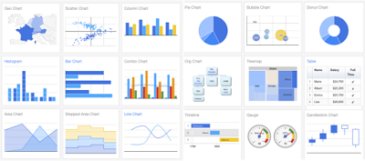
</div>
<ul>
<li>Many many chart types</li>
<li>The data remains local and is not uploaded to Google.</li>
<li>Charts are displayed locally via the R HTTP help server.</li>
<li>Flash alert! A modern browser with Internet connection is required and for some Flash charts.</li>
</ul>
<h3 id="setting-options">Setting Options</h3>
<p>The first thing we do is to create a code chunk that sets the googleVis options first to change the behaviour of plot.gvis, so that only the chart component of the HTML file is spit out. You normally would hide a code chunk like this by setting echo=FALSE and results='hide'.</p>
<pre><code>```{r setOptions, message=FALSE}
suppressPackageStartupMessages(library(googleVis))
op &lt;- options(gvis.plot.tag=&#39;chart&#39;)
```</code></pre>
<p>Now we're ready to use it. Note the use of code chunk option <em>results='asis'</em> is required.</p>
<h3 id="pie-example">Pie Example</h3>
<pre><code>```{r gvisPieExample, results=&#39;asis&#39;}
Pie &lt;- gvisPieChart(CityPopularity, options = list(width=400, height=400))
plot(Pie)
```</code></pre>
<!-- PieChart generated in R 3.2.2 by googleVis 0.5.9 package -->
<!-- Wed Aug 19 20:08:51 2015 -->
<!-- jsHeader -->
<script type="text/javascript">
 
// jsData 
function gvisDataPieChartID190c4c192559 () {
var data = new google.visualization.DataTable();
var datajson =
[
 [
 "New York",
200 
],
[
 "Boston",
300 
],
[
 "Miami",
400 
],
[
 "Chicago",
500 
],
[
 "Los Angeles",
600 
],
[
 "Houston",
700 
] 
];
data.addColumn('string','City');
data.addColumn('number','Popularity');
data.addRows(datajson);
return(data);
}
 
// jsDrawChart
function drawChartPieChartID190c4c192559() {
var data = gvisDataPieChartID190c4c192559();
var options = {};
options["allowHtml"] = true;
options["width"] =    400;
options["height"] =    400;

    var chart = new google.visualization.PieChart(
    document.getElementById('PieChartID190c4c192559')
    );
    chart.draw(data,options);
    

}
  
 
// jsDisplayChart
(function() {
var pkgs = window.__gvisPackages = window.__gvisPackages || [];
var callbacks = window.__gvisCallbacks = window.__gvisCallbacks || [];
var chartid = "corechart";
  
// Manually see if chartid is in pkgs (not all browsers support Array.indexOf)
var i, newPackage = true;
for (i = 0; newPackage && i < pkgs.length; i++) {
if (pkgs[i] === chartid)
newPackage = false;
}
if (newPackage)
  pkgs.push(chartid);
  
// Add the drawChart function to the global list of callbacks
callbacks.push(drawChartPieChartID190c4c192559);
})();
function displayChartPieChartID190c4c192559() {
  var pkgs = window.__gvisPackages = window.__gvisPackages || [];
  var callbacks = window.__gvisCallbacks = window.__gvisCallbacks || [];
  window.clearTimeout(window.__gvisLoad);
  // The timeout is set to 100 because otherwise the container div we are
  // targeting might not be part of the document yet
  window.__gvisLoad = setTimeout(function() {
  var pkgCount = pkgs.length;
  google.load("visualization", "1", { packages:pkgs, callback: function() {
  if (pkgCount != pkgs.length) {
  // Race condition where another setTimeout call snuck in after us; if
  // that call added a package, we must not shift its callback
  return;
}
while (callbacks.length > 0)
callbacks.shift()();
} });
}, 100);
}
 
// jsFooter
</script>
<!-- jsChart -->
<script type="text/javascript" src="https://www.google.com/jsapi?callback=displayChartPieChartID190c4c192559"></script>
<!-- divChart -->
<div id="PieChartID190c4c192559" style="width: 400; height: 400;">

</div>
<h3 id="supercharged-scatter-plot">Supercharged Scatter Plot</h3>
<p>To illustrate that linearity is often a matter of scale, drag and pan with a left mouse button to zoom in. Right-click to zoom out again.</p>
<pre><code>```{r gvisScatterOneExample, results=&#39;asis&#39;}
## Source: http://statistics.rainandrhino.org/blog/2014/09/03/google-charts/
set.seed(2020)
x &lt;- seq(0,100,by=0.5)
y &lt;- (50-x)^2+rnorm(length(x),sd=100)
curvy &lt;- data.frame(x,y)
gvScat &lt;- gvisScatterChart(curvy,
                   options=list(
                     explorer=&quot;{actions: [&#39;dragToZoom&#39;,
                     &#39;rightClickToReset&#39;],
                     maxZoomIn:0.05}&quot;,
                     chartArea=&quot;{width:&#39;85%&#39;,height:&#39;80%&#39;}&quot;,
                     hAxis=&quot;{title: &#39;Explanatory x&#39;,
                     titleTextStyle: {color: &#39;#000000&#39;}}&quot;,
                     vAxis=&quot;{title: &#39;Response y&#39;,
                     titleTextStyle: {color: &#39;#000000&#39;}}&quot;,
                     title=&quot;Curvilinear Relationship&quot;,
                     width=550, height=500,
                     legend=&quot;none&quot;),
                     chartid=&quot;ZoomZoom&quot;)
plot(gvScat)
```</code></pre>
<!-- ScatterChart generated in R 3.2.2 by googleVis 0.5.9 package -->
<!-- Wed Aug 19 20:08:51 2015 -->
<!-- jsHeader -->
<script type="text/javascript">
 
// jsData 
function gvisDataZoomZoom () {
var data = new google.visualization.DataTable();
var datajson =
[
 [
 0,
2537.697212 
],
[
 0.5,
2480.404837 
],
[
 1,
2291.197683 
],
[
 1.5,
2239.20941 
],
[
 2,
2024.346568 
],
[
 2.5,
2328.30735 
],
[
 3,
2302.912102 
],
[
 3.5,
2139.312225 
],
[
 4,
2291.913135 
],
[
 4.5,
2081.986679 
],
[
 5,
1939.687718 
],
[
 5.5,
2071.175918 
],
[
 6,
2055.637296 
],
[
 6.5,
1855.09161 
],
[
 7,
1836.673977 
],
[
 7.5,
1986.254312 
],
[
 8,
1934.399588 
],
[
 8.5,
1418.373539 
],
[
 9,
1452.102505 
],
[
 9.5,
1646.080349 
],
[
 10,
1817.436525 
],
[
 10.5,
1670.068265 
],
[
 11,
1552.822032 
],
[
 11.5,
1474.935244 
],
[
 12,
1527.426874 
],
[
 12.5,
1426.125064 
],
[
 13,
1498.784138 
],
[
 13.5,
1425.921831 
],
[
 14,
1281.256681 
],
[
 14.5,
1271.293199 
],
[
 15,
1143.749534 
],
[
 15.5,
1115.879783 
],
[
 16,
1265.534507 
],
[
 16.5,
1365.787371 
],
[
 17,
1127.811847 
],
[
 17.5,
1085.312767 
],
[
 18,
995.4401713 
],
[
 18.5,
999.8514718 
],
[
 19,
904.9701396 
],
[
 19.5,
974.9688372 
],
[
 20,
990.8501134 
],
[
 20.5,
819.7440402 
],
[
 21,
810.8995988 
],
[
 21.5,
739.6464023 
],
[
 22,
665.9922973 
],
[
 22.5,
781.5574713 
],
[
 23,
691.9288703 
],
[
 23.5,
704.4679564 
],
[
 24,
742.0044122 
],
[
 24.5,
699.1293635 
],
[
 25,
606.1210083 
],
[
 25.5,
660.3859521 
],
[
 26,
508.6239947 
],
[
 26.5,
599.8550241 
],
[
 27,
540.8753228 
],
[
 27.5,
518.3726283 
],
[
 28,
465.3953206 
],
[
 28.5,
329.4228811 
],
[
 29,
384.3077049 
],
[
 29.5,
478.1333933 
],
[
 30,
590.9037231 
],
[
 30.5,
405.3257043 
],
[
 31,
201.1684941 
],
[
 31.5,
662.4131747 
],
[
 32,
419.5235375 
],
[
 32.5,
343.1144616 
],
[
 33,
381.2919068 
],
[
 33.5,
251.6978654 
],
[
 34,
265.2966701 
],
[
 34.5,
257.076218 
],
[
 35,
304.5839125 
],
[
 35.5,
374.8505607 
],
[
 36,
24.30756836 
],
[
 36.5,
150.4156894 
],
[
 37,
78.5860028 
],
[
 37.5,
85.85072033 
],
[
 38,
-33.80994618 
],
[
 38.5,
60.02448374 
],
[
 39,
125.615421 
],
[
 39.5,
134.6158021 
],
[
 40,
162.8331306 
],
[
 40.5,
87.78614177 
],
[
 41,
312.4153309 
],
[
 41.5,
89.97102573 
],
[
 42,
-38.44147667 
],
[
 42.5,
283.7181301 
],
[
 43,
-139.9056665 
],
[
 43.5,
151.6451601 
],
[
 44,
220.6167027 
],
[
 44.5,
82.35326735 
],
[
 45,
-128.2962108 
],
[
 45.5,
-173.6864969 
],
[
 46,
64.69165381 
],
[
 46.5,
136.7736691 
],
[
 47,
-12.72734263 
],
[
 47.5,
-71.70931145 
],
[
 48,
38.88744997 
],
[
 48.5,
70.422425 
],
[
 49,
-52.14613874 
],
[
 49.5,
-67.48934215 
],
[
 50,
-172.8783941 
],
[
 50.5,
-98.87609916 
],
[
 51,
-57.55055617 
],
[
 51.5,
40.6021748 
],
[
 52,
78.66649197 
],
[
 52.5,
-86.59209118 
],
[
 53,
-24.81762967 
],
[
 53.5,
166.7614015 
],
[
 54,
42.65088778 
],
[
 54.5,
50.20339324 
],
[
 55,
-7.280201955 
],
[
 55.5,
173.7847433 
],
[
 56,
136.6527204 
],
[
 56.5,
-129.6913636 
],
[
 57,
78.89204617 
],
[
 57.5,
-26.2225636 
],
[
 58,
-55.95898328 
],
[
 58.5,
-55.38871173 
],
[
 59,
68.68219333 
],
[
 59.5,
306.8442199 
],
[
 60,
68.77170251 
],
[
 60.5,
146.9939225 
],
[
 61,
247.9439261 
],
[
 61.5,
-94.23538391 
],
[
 62,
15.01500904 
],
[
 62.5,
175.0385938 
],
[
 63,
244.1642855 
],
[
 63.5,
360.7181336 
],
[
 64,
346.8271736 
],
[
 64.5,
114.9338291 
],
[
 65,
235.342274 
],
[
 65.5,
179.6939502 
],
[
 66,
246.2399374 
],
[
 66.5,
259.9051893 
],
[
 67,
184.5320483 
],
[
 67.5,
298.762966 
],
[
 68,
500.0135333 
],
[
 68.5,
199.0380413 
],
[
 69,
627.2201028 
],
[
 69.5,
251.1308468 
],
[
 70,
401.5101774 
],
[
 70.5,
416.2819428 
],
[
 71,
660.1440323 
],
[
 71.5,
264.606245 
],
[
 72,
530.3665665 
],
[
 72.5,
480.0287843 
],
[
 73,
415.4285494 
],
[
 73.5,
573.3799481 
],
[
 74,
585.9427928 
],
[
 74.5,
294.5816348 
],
[
 75,
590.2863346 
],
[
 75.5,
455.5873842 
],
[
 76,
654.3923354 
],
[
 76.5,
557.3303521 
],
[
 77,
763.5434061 
],
[
 77.5,
775.0702394 
],
[
 78,
671.2147217 
],
[
 78.5,
817.2950343 
],
[
 79,
772.7300908 
],
[
 79.5,
935.0553817 
],
[
 80,
961.0364487 
],
[
 80.5,
878.9843067 
],
[
 81,
1036.440589 
],
[
 81.5,
1011.060497 
],
[
 82,
831.1714369 
],
[
 82.5,
1179.832136 
],
[
 83,
1121.827731 
],
[
 83.5,
1036.758551 
],
[
 84,
966.4311784 
],
[
 84.5,
1274.919241 
],
[
 85,
1349.402511 
],
[
 85.5,
1283.875996 
],
[
 86,
1219.930646 
],
[
 86.5,
1409.472096 
],
[
 87,
1435.155675 
],
[
 87.5,
1246.876663 
],
[
 88,
1224.965309 
],
[
 88.5,
1364.574604 
],
[
 89,
1626.000513 
],
[
 89.5,
1559.679692 
],
[
 90,
1572.398767 
],
[
 90.5,
1725.102129 
],
[
 91,
1576.106534 
],
[
 91.5,
1548.891366 
],
[
 92,
2005.413909 
],
[
 92.5,
1786.685823 
],
[
 93,
1941.678696 
],
[
 93.5,
1820.903637 
],
[
 94,
1806.025829 
],
[
 94.5,
2068.67964 
],
[
 95,
2145.064152 
],
[
 95.5,
1953.216022 
],
[
 96,
2192.147189 
],
[
 96.5,
2249.259024 
],
[
 97,
2136.275729 
],
[
 97.5,
2318.912073 
],
[
 98,
2194.855727 
],
[
 98.5,
2300.640547 
],
[
 99,
2402.693396 
],
[
 99.5,
2516.349069 
],
[
 100,
2427.046688 
] 
];
data.addColumn('number','x');
data.addColumn('number','y');
data.addRows(datajson);
return(data);
}
 
// jsDrawChart
function drawChartZoomZoom() {
var data = gvisDataZoomZoom();
var options = {};
options["allowHtml"] = true;
options["explorer"] = {actions: ['dragToZoom',
                     'rightClickToReset'],
                     maxZoomIn:0.05};
options["chartArea"] = {width:'85%',height:'80%'};
options["hAxis"] = {title: 'Explanatory x',
                     titleTextStyle: {color: '#000000'}};
options["vAxis"] = {title: 'Response y',
                     titleTextStyle: {color: '#000000'}};
options["title"] = "Curvilinear Relationship";
options["width"] =    550;
options["height"] =    500;
options["legend"] = "none";

    var chart = new google.visualization.ScatterChart(
    document.getElementById('ZoomZoom')
    );
    chart.draw(data,options);
    

}
  
 
// jsDisplayChart
(function() {
var pkgs = window.__gvisPackages = window.__gvisPackages || [];
var callbacks = window.__gvisCallbacks = window.__gvisCallbacks || [];
var chartid = "corechart";
  
// Manually see if chartid is in pkgs (not all browsers support Array.indexOf)
var i, newPackage = true;
for (i = 0; newPackage && i < pkgs.length; i++) {
if (pkgs[i] === chartid)
newPackage = false;
}
if (newPackage)
  pkgs.push(chartid);
  
// Add the drawChart function to the global list of callbacks
callbacks.push(drawChartZoomZoom);
})();
function displayChartZoomZoom() {
  var pkgs = window.__gvisPackages = window.__gvisPackages || [];
  var callbacks = window.__gvisCallbacks = window.__gvisCallbacks || [];
  window.clearTimeout(window.__gvisLoad);
  // The timeout is set to 100 because otherwise the container div we are
  // targeting might not be part of the document yet
  window.__gvisLoad = setTimeout(function() {
  var pkgCount = pkgs.length;
  google.load("visualization", "1", { packages:pkgs, callback: function() {
  if (pkgCount != pkgs.length) {
  // Race condition where another setTimeout call snuck in after us; if
  // that call added a package, we must not shift its callback
  return;
}
while (callbacks.length > 0)
callbacks.shift()();
} });
}, 100);
}
 
// jsFooter
</script>
<!-- jsChart -->
<script type="text/javascript" src="https://www.google.com/jsapi?callback=displayChartZoomZoom"></script>
<!-- divChart -->
<div id="ZoomZoom" style="width: 550; height: 500;">

</div>
<h2 id="motion-chart">Motion Chart</h2>
<pre class="sourceCode r"><code class="sourceCode r">M &lt;-<span class="st"> </span><span class="kw">gvisMotionChart</span>(Fruits, <span class="st">&#39;Fruit&#39;</span>, <span class="st">&#39;Year&#39;</span>, <span class="dt">options=</span><span class="kw">list</span>(<span class="dt">width=</span><span class="dv">400</span>, <span class="dt">height=</span><span class="dv">350</span>))
<span class="kw">plot</span>(M)</code></pre>
<!-- MotionChart generated in R 3.2.2 by googleVis 0.5.9 package -->
<!-- Wed Aug 19 20:08:51 2015 -->
<!-- jsHeader -->
<script type="text/javascript">
 
// jsData 
function gvisDataMotionChartID190c2b336456 () {
var data = new google.visualization.DataTable();
var datajson =
[
 [
 "Apples",
2008,
"West",
98,
78,
20,
"2008-12-31" 
],
[
 "Apples",
2009,
"West",
111,
79,
32,
"2009-12-31" 
],
[
 "Apples",
2010,
"West",
89,
76,
13,
"2010-12-31" 
],
[
 "Oranges",
2008,
"East",
96,
81,
15,
"2008-12-31" 
],
[
 "Bananas",
2008,
"East",
85,
76,
9,
"2008-12-31" 
],
[
 "Oranges",
2009,
"East",
93,
80,
13,
"2009-12-31" 
],
[
 "Bananas",
2009,
"East",
94,
78,
16,
"2009-12-31" 
],
[
 "Oranges",
2010,
"East",
98,
91,
7,
"2010-12-31" 
],
[
 "Bananas",
2010,
"East",
81,
71,
10,
"2010-12-31" 
] 
];
data.addColumn('string','Fruit');
data.addColumn('number','Year');
data.addColumn('string','Location');
data.addColumn('number','Sales');
data.addColumn('number','Expenses');
data.addColumn('number','Profit');
data.addColumn('string','Date');
data.addRows(datajson);
return(data);
}
 
// jsDrawChart
function drawChartMotionChartID190c2b336456() {
var data = gvisDataMotionChartID190c2b336456();
var options = {};
options["width"] =    400;
options["height"] =    350;
options["state"] = "";

    var chart = new google.visualization.MotionChart(
    document.getElementById('MotionChartID190c2b336456')
    );
    chart.draw(data,options);
    

}
  
 
// jsDisplayChart
(function() {
var pkgs = window.__gvisPackages = window.__gvisPackages || [];
var callbacks = window.__gvisCallbacks = window.__gvisCallbacks || [];
var chartid = "motionchart";
  
// Manually see if chartid is in pkgs (not all browsers support Array.indexOf)
var i, newPackage = true;
for (i = 0; newPackage && i < pkgs.length; i++) {
if (pkgs[i] === chartid)
newPackage = false;
}
if (newPackage)
  pkgs.push(chartid);
  
// Add the drawChart function to the global list of callbacks
callbacks.push(drawChartMotionChartID190c2b336456);
})();
function displayChartMotionChartID190c2b336456() {
  var pkgs = window.__gvisPackages = window.__gvisPackages || [];
  var callbacks = window.__gvisCallbacks = window.__gvisCallbacks || [];
  window.clearTimeout(window.__gvisLoad);
  // The timeout is set to 100 because otherwise the container div we are
  // targeting might not be part of the document yet
  window.__gvisLoad = setTimeout(function() {
  var pkgCount = pkgs.length;
  google.load("visualization", "1", { packages:pkgs, callback: function() {
  if (pkgCount != pkgs.length) {
  // Race condition where another setTimeout call snuck in after us; if
  // that call added a package, we must not shift its callback
  return;
}
while (callbacks.length > 0)
callbacks.shift()();
} });
}, 100);
}
 
// jsFooter
</script>
<!-- jsChart -->
<script type="text/javascript" src="https://www.google.com/jsapi?callback=displayChartMotionChartID190c2b336456"></script>
<!-- divChart -->
<div id="MotionChartID190c2b336456" style="width: 400; height: 350;">

</div>
<blockquote>
<p>Note that the Motion Chart is only displayed when hosted on a web server, or if placed in a directory which has been added to the trusted sources in the <a href="http://www.macromedia.com/support/documentation/en/flashplayer/help/settings_manager04.html">security settings of Macromedia</a>. You should also set self_contained to no in the R Markdown YAML. See the googleVis package vignette for more details.</p>
</blockquote>
<p>Finally, restore the googleVis options back to what they were.</p>
<pre><code>```{r resetOptions}
## Set options back to original options
options(op)
```</code></pre>
<h3 id="more-examples">More Examples</h3>
<ul>
<li><a href="https://cran.r-project.org/web/packages/googleVis/vignettes/googleVis_examples.html" class="uri">https://cran.r-project.org/web/packages/googleVis/vignettes/googleVis_examples.html</a></li>
</ul>
</div>
<div id="shiny" class="slide section level1">
<h1>Shiny</h1>
<p>Server side technology</p>
<p>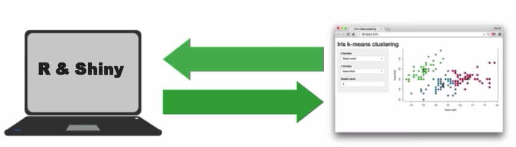</p>
<ul>
<li>don't have to send all the data to the browser</li>
<li>can customize computation</li>
<li>access to many more R resources</li>
</ul>
</div>
<div id="starting-a-new-shiny-document" class="slide section level1">
<h1>Starting a New Shiny Document</h1>
<p>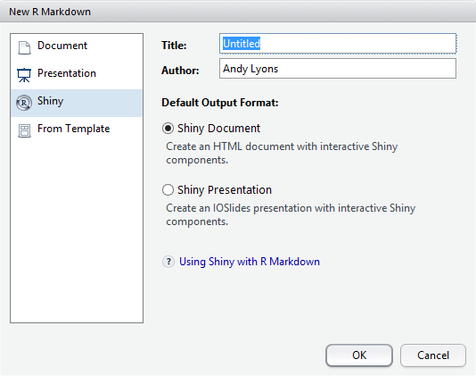</p>
<p>Default YAML created:</p>
<pre><code>---
title: &quot;Untitled&quot;
author: &quot;Andy Lyons&quot;
date: &quot;Tuesday, August 18, 2015&quot;
output: html_document
runtime: shiny
---</code></pre>
<p>Rather limited layout options:</p>
<p>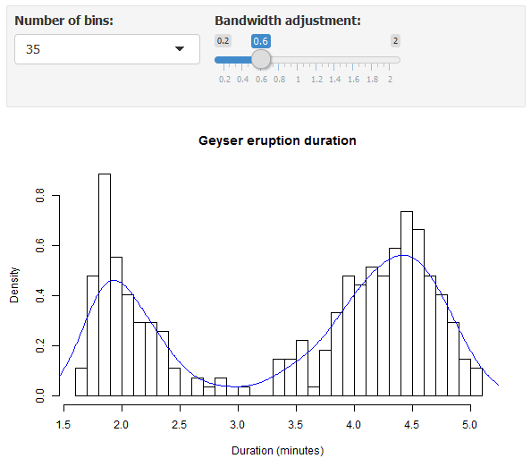</p>
</div>
<div id="shiny-apps" class="slide section level1">
<h1>Shiny apps</h1>
<ul>
<li>very flexible GUI (especially with HTML/CSS)</li>
<li>more control of reactivity (computationally intensive processes)</li>
</ul>
<p>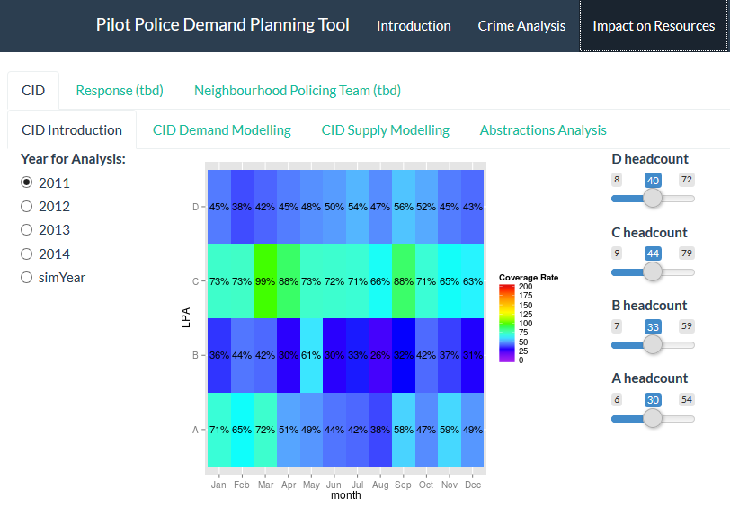</p>
</div>
<div id="anatomy-of-a-shiny-document" class="slide section level1">
<h1>Anatomy of a Shiny document</h1>
<div class="colleft" style="width:29%;">
<p><span style="color:red;">UI</span> functions display input elements and output elements</p>
<p><span style="color:green;">Render</span> functions create placeholders where output will go, and grab the current value of the input elements</p>
</div>
<div class="colright" style="width:70%;">
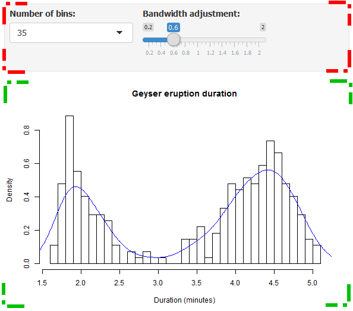
</div>
<div class="colclear">

</div>
<h3 id="example-1">Example</h3>
<p>Let's say we want to make this plotting function interactive:</p>
<pre><code>hist(faithful$eruptions, probability=TRUE, breaks=20,
       xlab = &quot;Duration (minutes)&quot;, main = &quot;Geyser eruption duration&quot;)
dens &lt;- density(faithful$eruptions, adjust=1)
lines(dens, col = &quot;blue&quot;)       </code></pre>
<h3 id="input-elements">Input elements</h3>
<ul>
<li>display inputs with <em>selectInput(), sliderInput(), textInput(), numericInput()</em>, etc.
<ul>
<li>first argument becomes the 'name' you can use elsewhere in code</li>
</ul></li>
<li>enclose selectXXX() functions as the 'arguments' to <em>inputPanel()</em>
<ul>
<li>inputPanel() can go at the top or bottom of code chunk</li>
</ul></li>
</ul>
<pre><code>inputPanel(
  selectInput(&quot;n_breaks&quot;, label = &quot;Number of bins:&quot;,
              choices = c(10, 20, 35, 50), selected = 20),
  
  sliderInput(&quot;bw_adjust&quot;, label = &quot;Bandwidth adjustment:&quot;,
              min = 0.2, max = 2, value = 1, step = 0.2)
)</code></pre>
<h3 id="render-elements">Render elements</h3>
<ul>
<li>designate where plots should appear with <em>renderPlot(), renderTable()</em>, etc.</li>
<li>grab value of input elements using <em>input$element_name</em></li>
</ul>
<pre><code>renderPlot({
  hist(faithful$eruptions, probability = TRUE, breaks = as.numeric(input$n_breaks),
       xlab = &quot;Duration (minutes)&quot;, main = &quot;Geyser eruption duration&quot;)
  dens &lt;- density(faithful$eruptions, adjust = input$bw_adjust)
  lines(dens, col = &quot;blue&quot;)
})</code></pre>
<h3 id="whole-code-chunk">Whole code chunk</h3>
<pre><code>inputPanel(
  selectInput(&quot;n_breaks&quot;, label = &quot;Number of bins:&quot;,
              choices = c(10, 20, 35, 50), selected = 20),
  
  sliderInput(&quot;bw_adjust&quot;, label = &quot;Bandwidth adjustment:&quot;,
              min = 0.2, max = 2, value = 1, step = 0.2)
)

renderPlot({
  hist(faithful$eruptions, probability = TRUE, breaks = as.numeric(input$n_breaks),
       xlab = &quot;Duration (minutes)&quot;, main = &quot;Geyser eruption duration&quot;)
  dens &lt;- density(faithful$eruptions, adjust = input$bw_adjust)
  lines(dens, col = &quot;blue&quot;)
})</code></pre>
</div>
<div id="shiny-resources" class="slide section level1">
<h1>Shiny Resources</h1>
<ul>
<li><a href="http://rmarkdown.rstudio.com/authoring_shiny.html" class="uri">http://rmarkdown.rstudio.com/authoring_shiny.html</a></li>
<li><a href="https://www.rstudio.com/resources/webinars/" class="uri">https://www.rstudio.com/resources/webinars/</a></li>
</ul>
</div>
<div id="other-r-integrated-tools" class="slide section level1">
<h1>Other R Integrated Tools</h1>
<p>RCharts</p>
<ul>
<li>similar functionality to googleVis</li>
<li>uses a formula syntax similar to the lattice package</li>
<li>get started at <a href="http://rcharts.io/" class="uri">http://rcharts.io/</a> and <a href="http://timelyportfolio.github.io/docs/_build/html/quickstart/index.html" class="uri">http://timelyportfolio.github.io/docs/_build/html/quickstart/index.html</a></li>
</ul>
<p>Plotly</p>
<ul>
<li><scan class="pkgname">plotly</scan> takes as input a ggplot2 object and transforms it into an interactive chart that can then be embedded into websites. Using the service requires authentication, which is a clear limitation. By default all plots are made publicly visible to anyone, but there apparently is a way to produce private plots as well, with a limit in their number in the free account.</li>
<li>see <a href="https://ropensci.org/blog/2014/04/17/plotly/" class="uri">https://ropensci.org/blog/2014/04/17/plotly/</a></li>
</ul>
<p>Manipulate</p>
<ul>
<li>The <scan class="pkgname">maniuplate</scan> package provides a pallete of sliders and pickers for use within RStudio</li>
</ul>
</div>
<div id="sharing-your-work" class="slide section level1">
<h1>Sharing Your Work</h1>
<h3 id="general-public">General Public</h3>
<p>HTML reports</p>
<ul>
<li>any standard server (be sure to include the js &amp; css files</li>
<li>RPubs (free service, integrated with RStudio)</li>
</ul>
<p>Shiny documents and apps</p>
<ul>
<li>shiny.io
<ul>
<li>free account allows 5 public apps</li>
<li>see <span class="pkgname">shinyapps</span> to streamline</li>
</ul></li>
<li>install shiny server on your own network</li>
</ul>
<h3 id="r-users">R Users</h3>
<ul>
<li>share scripts and Rmd file</li>
<li>bundle in your package</li>
</ul>
</div>
<div id="summary" class="slide section level1">
<h1>Summary</h1>
<p>begin by thinking about <em>why</em> you want to make data visualizations interactive numerous options through R Markdown heavy duty interactivity possible with Shiny</p>
</div>

  <!-- dynamically load mathjax for compatibility with self-contained -->
  <script>
    (function () {
      var script = document.createElement("script");
      script.type = "text/javascript";
      script.src  = "https://cdn.mathjax.org/mathjax/latest/MathJax.js?config=TeX-AMS-MML_HTMLorMML";
      document.getElementsByTagName("head")[0].appendChild(script);
    })();
  </script>

</body>
</html>
